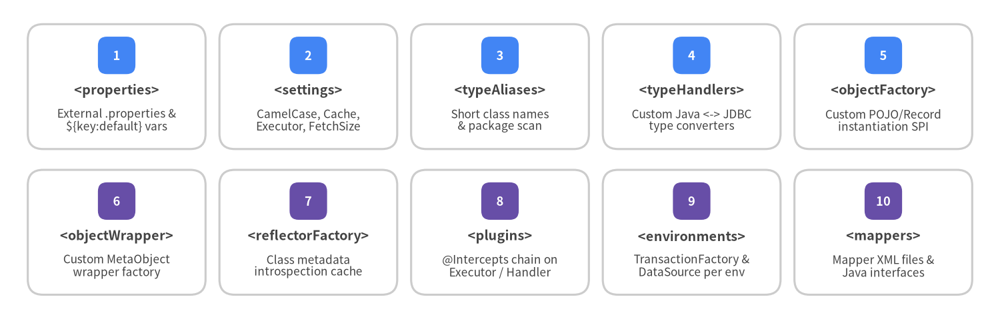
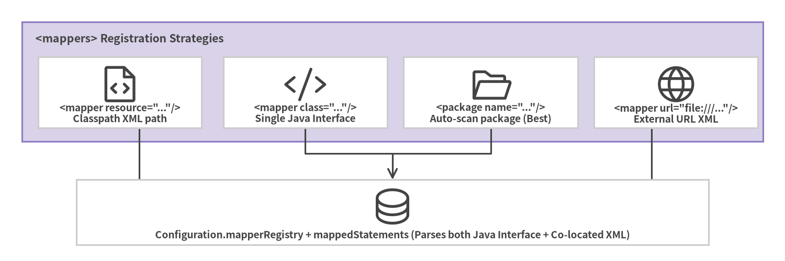

2. XML Configuration (mybatis-config.xml)
The root configuration file (mybatis-config.xml) defines global behavior for a SqlSessionFactory: runtime <settings>, <typeAliases>, custom <typeHandlers>, <plugins>, <environments>, <databaseIdProvider>, and <mappers>.
Strict <configuration> Element Ordering
Because mybatis-3-config.dtd validates the XML structure using a sequential DTD content model, child elements inside <configuration> must appear in the exact order shown below:

Source Code
from drawlib.canvas import save, setup
from drawlib.smartarts import CardList
from drawlib.styles import Colors, Styles
setup(width=144, height=46, dpi=150)
row1 = CardList(
style=Styles.Neutral.patch(shape_fill_color=Colors.White),
text_style=Styles.DarkBold.patch(text_size=9.5),
description_style=Styles.Dark.patch(text_size=8.3),
badge_shape="rounded_rect",
badge_style=Styles.PrimaryFlat,
badge_text_style=Styles.WhiteBold.patch(text_size=8.8),
direction="horizontal",
spacing=2.0,
)
row1.add("<properties>", "External .properties &\n${key:default} vars", badge_text="1")
row1.add("<settings>", "CamelCase, Cache,\nExecutor, FetchSize", badge_text="2")
row1.add("<typeAliases>", "Short class names\n& package scan", badge_text="3")
row1.add("<typeHandlers>", "Custom Java <-> JDBC\ntype converters", badge_text="4")
row1.add("<objectFactory>", "Custom POJO/Record\ninstantiation SPI", badge_text="5")
row1.draw((4.0, 24.5), width=136.0, height=18.0, align="bottom_left")
row2 = CardList(
style=Styles.Neutral.patch(shape_fill_color=Colors.White),
text_style=Styles.DarkBold.patch(text_size=9.5),
description_style=Styles.Dark.patch(text_size=8.3),
badge_shape="rounded_rect",
badge_style=Styles.SecondaryFlat,
badge_text_style=Styles.WhiteBold.patch(text_size=8.8),
direction="horizontal",
spacing=2.0,
)
row2.add("<objectWrapper>", "Custom MetaObject\nwrapper factory", badge_text="6")
row2.add("<reflectorFactory>", "Class metadata\nintrospection cache", badge_text="7")
row2.add("<plugins>", "@Intercepts chain on\nExecutor / Handler", badge_text="8")
row2.add("<environments>", "TransactionFactory &\nDataSource per env", badge_text="9")
row2.add("<mappers>", "Mapper XML files &\nJava interfaces", badge_text="10")
row2.draw((4.0, 3.5), width=136.0, height=18.0, align="bottom_left")
save()
[!IMPORTANT] Placing
<typeAliases>before<settings>, or<plugins>after<environments>, will causeXMLConfigBuilderto fail immediately at startup with a SAX DTD validation error (The content of element type "configuration" must match "(properties?,settings?,typeAliases?,typeHandlers?,objectFactory?,objectWrapperFactory?,reflectorFactory?,plugins?,environments?,databaseIdProvider?,mappers?)").
Production mybatis-config.xml Template
<?xml version="1.0" encoding="UTF-8" ?>
<!DOCTYPE configuration
PUBLIC "-//mybatis.org//DTD Config 3.0//EN"
"https://mybatis.org/dtd/mybatis-3-config.dtd">
<configuration>
<!-- 1. Externalized properties with default value syntax enabled -->
<properties resource="db.properties">
<property name="org.apache.ibatis.parsing.PropertyParser.enable-default-value" value="true"/>
</properties>
<!-- 2. Global runtime settings -->
<settings>
<setting name="mapUnderscoreToCamelCase" value="true"/>
<setting name="localCacheScope" value="STATEMENT"/>
<setting name="cacheEnabled" value="true"/>
<setting name="defaultExecutorType" value="SIMPLE"/>
<setting name="defaultFetchSize" value="200"/>
<setting name="defaultStatementTimeout" value="30"/>
<setting name="jdbcTypeForNull" value="NULL"/>
<setting name="returnInstanceForEmptyRow" value="true"/>
<setting name="argNameBasedConstructorAutoMapping" value="true"/>
</settings>
<!-- 3. Short type aliases for domain models -->
<typeAliases>
<package name="com.example.blog.domain"/>
</typeAliases>
<!-- 4. Custom Java <-> JDBC TypeHandlers -->
<typeHandlers>
<typeHandler handler="com.example.blog.type.MoneyTypeHandler"/>
</typeHandlers>
<!-- 8. Interceptor plugins -->
<plugins>
<plugin interceptor="com.example.blog.plugin.QueryMetricsPlugin">
<property name="slowThresholdMs" value="250"/>
</plugin>
</plugins>
<!-- 9. Database environments -->
<environments default="production">
<environment id="production">
<transactionManager type="JDBC"/>
<dataSource type="POOLED">
<property name="driver" value="${db.driver:org.postgresql.Driver}"/>
<property name="url" value="${db.url:jdbc:postgresql://localhost:5432/blog}"/>
<property name="username" value="${db.username:postgres}"/>
<property name="password" value="${db.password:secret}"/>
<property name="poolMaximumActiveConnections" value="20"/>
<property name="poolMaximumIdleConnections" value="5"/>
<property name="poolPingEnabled" value="true"/>
<property name="poolPingQuery" value="SELECT 1"/>
</dataSource>
</environment>
</environments>
<!-- 10. Mapper registrations -->
<mappers>
<package name="com.example.blog.mapper"/>
</mappers>
</configuration>
High-Impact <settings> Reference
Of the 30+ settings on org.apache.ibatis.session.Configuration, the following nine have the largest impact on production correctness and performance:
| Setting | Default | Recommended | Effect |
|---|---|---|---|
mapUnderscoreToCamelCase |
false |
true |
Auto-maps snake_case SQL columns (created_at) to camelCase Java properties (createdAt). |
argNameBasedConstructorAutoMapping |
false |
true |
Auto-maps constructor parameters by Java -parameters name rather than positional column order (ideal for Java records). |
localCacheScope |
SESSION |
STATEMENT |
Prevents stale L1 cache reads in multi-instance services or when Spring transactions span multiple calls. |
cacheEnabled |
true |
true |
Master switch for L2 <cache> namespaces (wraps Executor in CachingExecutor). |
defaultExecutorType |
SIMPLE |
SIMPLE |
Selects SimpleExecutor (SIMPLE), ReuseExecutor (REUSE), or BatchExecutor (BATCH). |
defaultFetchSize |
null |
100–500 |
Sets Statement.setFetchSize(n) hint so JDBC drivers stream large result sets in chunks. |
defaultStatementTimeout |
null |
10–30 (s) |
Sets Statement.setQueryTimeout(seconds) to guard against runaway queries. |
jdbcTypeForNull |
OTHER |
NULL / VARCHAR |
Oracle and DB2 JDBC drivers reject Types.OTHER for untyped null parameters; NULL is portable. |
callSettersOnNulls |
false |
true (for Maps) |
Forces Map result rows to include keys whose SQL column value is NULL. |
Property Precedence & Default Values
When <properties> is used, XMLConfigBuilder resolves variables in three stages (highest priority last):
<property name="..." value="..."/>child elements inside<properties>.- External file loaded via
resource="..."(classpath) orurl="...". - Programmatic
Propertiespassed tonew SqlSessionFactoryBuilder().build(reader, props)(Highest Priority).

Source Code
from drawlib.canvas import save, setup
from drawlib.diagrams.architecture import ArchitectureDiagram, Node, NodeGroup, PhosphorIcon
from drawlib.styles import Colors, Styles
setup(width=144, height=48, dpi=150)
d = ArchitectureDiagram(
node_style=Styles.Dark,
node_text_style=Styles.DarkBold.patch(text_size=9.2),
edge_style=Styles.Dark.patch(line_width=1.5),
edge_text_style=Styles.DarkBold.patch(text_size=8.8),
node_card_style=Styles.Neutral.patch(shape_fill_color=Colors.White),
)
grp = d.add(
NodeGroup(
"<mappers> Registration Strategies",
width=136,
height=22,
style=Styles.SecondaryNeutral,
text_style=Styles.DarkBold.patch(text_size=10.2, halign="left", valign="top"),
),
xy=(4, 22),
)
n_res = grp.add(Node('<mapper resource="..."/>\nClasspath XML path', icon=PhosphorIcon.FILE_CODE, width=30, height=13), xy=(18, 9))
n_cls = grp.add(Node('<mapper class="..."/>\nSingle Java Interface', icon=PhosphorIcon.CODE, width=30, height=13), xy=(52, 9))
n_pkg = grp.add(Node('<package name="..."/>\nAuto-scan package (Best)', icon=PhosphorIcon.FOLDER_OPEN, width=32, height=13), xy=(86, 9))
n_url = grp.add(Node('<mapper url="file:///..."/>\nExternal URL XML', icon=PhosphorIcon.GLOBE, width=30, height=13), xy=(120, 9))
n_reg = d.add(
Node("Configuration.mapperRegistry + mappedStatements (Parses both Java Interface + Co-located XML)", icon=PhosphorIcon.DATABASE, width=116, height=12),
xy=(72, 9),
)
n_res.connect(n_reg)
n_cls.connect(n_reg)
n_pkg.connect(n_reg)
n_url.connect(n_reg)
d.draw(xy=(0, 0))
save()
Co-locating Mapper Interfaces and XML Files
When you register mappers via <package name="com.example.blog.mapper"/> or configuration.addMapper(AuthorMapper.class), MapperAnnotationBuilder automatically searches the classpath for a companion XML resource at the exact same package path (com/example/blog/mapper/AuthorMapper.xml). Keep your interface and XML in matching directory trees (src/main/java/com/example/blog/mapper/AuthorMapper.java and src/main/resources/com/example/blog/mapper/AuthorMapper.xml) so a single <package> tag registers both!